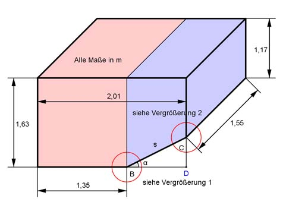

Aufgabe 79
Wie groß ist das Füllvolumen V des dargestellten
oben offenen Containers, wenn die Wände 5 cm dick sind?
Wie groß ist der Schutzanstrich S außen?

Innenvolumen V:
V = (Rechteckprisma innen + Trapezprisma innen) * Länge l innen
Innenmaße unter Berücksichtigung der Wanddicke 5 cm = 0,05 m:
Aus 1,63 m außen wird innen 1,63 m - 0,05 m = 1,58 m
Aus 2,01 m außen wird innen 2,01 m – 2 * 0,05 m = 1,91 m
Aus 1,55 m außen wird innen 1,55 m – 2 * 0,05 m = 1,45 m
Satz von Pythagoras im Dreieck BDC:
BD = 2,01 m – 1,35 m = 0,66 m
CD = 1,63 m – 1,17 m = 0,46 m
s² = 0,66² + 0,46² = 0,647 m² |√
s = 0,8 m
CD 0,46 m
tan α = ---- = --------- = 0,69697 --> α = 34,9°
BD 0,66 m
Vergrößerung 1:
Winkel ABD = 180° - α
Winkel ABD
Winkel ABC = -------------- = 90° - α/2 = 90° - γ --> α/2 = γ
2
Winkel ACB = γ = α/2 = 34,9°/2 = 17,45°
AB
tan γ = ------- | *5 cm
5 cm
AB = tan γ * 5 cm = 0,31433 * 5 cm = 1,57 cm = 0,0157 m = AD
Aus 1,35 m außen wird innen 1,35 m – 0,05 m – 0,0157 m = 1,284 m
Trapezhöhe innen = 1,91 m - 1,284 m = 0,626 m
Vergrößerung 2:
Winkel GCH = 90° + α
90° + α
Winkel GCE = ----------- = 45° + α/2
2
Winkel GEC = 90° - (45° + α/2) = 45° - α/2 = 45° - 17,45° = 27,55°
GC
tan 27,55° = -------- | * 5 cm
5 cm
5 cm * tan 27,55° = GB
GC = 5 cm * 0,52168 = 2,6 cm = CH
Aus s = 0,8 m außen wird innen 0,8 m – 0,0157 m – 0,026 m = 0,758 m
Aus 1,17 m außen wird innen 1,17 m – 0,026 m = 1,144 m
Trapezhöhe innen = 1,91 m -
1,58 m + 1,144 m
V = (1,284 m * 1,58 m + -------------------- * 0,626 m) * 1,45 m
2
V = (2,03 m² + 0,853 m²) * 1,45 m = 4,18 m³
Schutzanstrich S:
 Flächen mit der Breite 1,55 m:
(1,63 m + 1,35 m + 0,8 m + 1,17 m ) * 1,55 = 7,67 m²
2 * Stirnfläche:
2 * (Rechteck + Trapez) =
1,63 m + 1,17 m
= 2 * (1,63 m * 1,35 m + ------------------ * 0,66 m) =
2
= 2 * (2,2 m² + 0,924 m²) = 6,248 m²
S = 7,67 m² + 6,248 m² = 13,92 m²
Flächen mit der Breite 1,55 m:
(1,63 m + 1,35 m + 0,8 m + 1,17 m ) * 1,55 = 7,67 m²
2 * Stirnfläche:
2 * (Rechteck + Trapez) =
1,63 m + 1,17 m
= 2 * (1,63 m * 1,35 m + ------------------ * 0,66 m) =
2
= 2 * (2,2 m² + 0,924 m²) = 6,248 m²
S = 7,67 m² + 6,248 m² = 13,92 m²